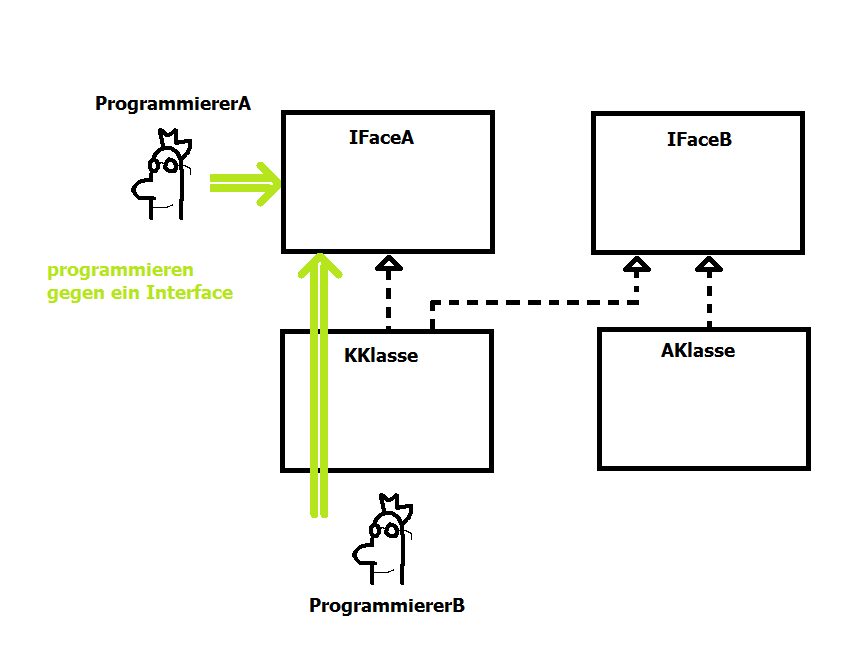

+----------
|
| 1 2
| O> <O
|
+----------
Hamster 1 und Hamster 2
- Position im Territorium
- Blickrichtung
- Farbe
- Körner im Maul
Gemeinsamkeiten, aber unterschiedliche Ausprägungen
Gemeinsamkeiten => Eigenschaften bzw. Attribute
Ausprägungen => Eigenschaftswerte, Attributwerte
vor();
nimm();
gib();
linksUm();
=>Verhalten bzw. Methoden
Was passiert, wenn der Hamster einen Schritt vorwärts macht?
->Hamster bewegt sich und ändert die Eigenschaften für die Position.
Das Verhalten hat Einfluss auf die Attributwerte der Objekte.
Neu: es kann mehr als einen Hamster geben
->Es muss irgendeine Anweisung geben, die neue Hamster erzeugt
new
->wir muessen den Hamstern "Namen" geben
damit wir diese voneinander unterscheiden koennen
Objektvariablen
->neue Hamster muessen durch irgendeine Anweisung im Territorium
plaziert werden können
init
Hamster = Klassendatentyp
Hamster facepalm = Hamster.getStandardHamster();
facepalm . vor();
Datentyp
- Speicherplatz
- Wie muss der Computer die Folge von 0 und 1 interpretieren
- Welche Operationen koennen mit der Variablen ausgefuehrt werden?
Variablen vom Typ Hamster
- Lebensdauer
- Gültigkeitsbereich
Hamster paul;
void main(){
paul = Hamster.getStandardHamster();
}
Gültigkeitsbereich
main(){ void prozedur(){
paul --------> ...
...
<--------
}
}
Lebensdauer
Eine Variable "stirbt" wenn der Anweisungsblock in
dem sie definiert wurde verlassen wird.
null : "nichts"
Hamster paul = Hamster.getStandardHamster();
paul = null;
paul = new Hamster();
paul = null;
paul = new Hamster();
paul = new Hamster();
^ ^
paul - - - - > (.___.) blauer Hamster
| ^ ^
+-----------> (.___.) gruener Hamster
Klasse Hamster
- Klassen sind Bauplaene
- beschreiben welche Eigenschaften und welches Verhalten Objekte der Klasse besitzen
class Hamster{
Eigenschaften: Variablen, Konstanten
Verhalten: Methoden (Prozeduren oder Funktionen)
}
Klassennamen beginnen mit einem Großbuchstaben
class EigeneKlasse{
Eigenschaften
------------------
Verhalten
}
class Hamster{
int blickrichtung;
int spalte;
int reihe;
int anzahlKoerner;
int farbe;
void linksUm(){
...
}
void nimm(){
...
}
void vor(){
...
}
boolean vornFrei(){
...
return ...
}
boolean kornDa(){
...
return ...
}
}
void linksUm(){
0
^
|
|
|
3 <-----------> 1
|
|
|
V
2
blickrichtung = (blickrichtung + 3) % 4;
N = 0 + 3 = 3 % 4 = 3 = W
O = 1 + 3 = 4 % 4 = 0 = N
S = 2 + 3 = 5 % 4 = 1 = 0
W = 3 + 3 = 6 % 4 = 2 = S
}
Objekt . Methode()
Objekt . Attribut
class Hamster{
void vor(){
if(this.blickrichtung == 0){
this.reihe = this.reihe - 1;
}
if(this.blickrichtung == 2){
this.reihe = this.reihe + 1;
}
if(this.blickrichtung == 1){
this.spalte = this.spalte + 1;
}
if(this.blickrichtung == 1){
this.spalte = this.spalte - 1;
}
}
}
Kapitel 4 Aufgabe 5
Hamster paul
0 Reihe
8 Spalte
0 Blickrichtung
4 Koerner
Hamster heidi
0 Reihe
6 Spalte
2 Blickrichtung
7 Koerner
void rechtsUm(Hamster name){
name.linksUm();
name.linksUm();
name.linksUm();
}
void main() {
Hamster paul = Hamster.getStandardHamster();
rechtsUm(paul);
}
Erweitern von Klassen mit extends
class MeinHamster extends Hamster{
void rechtsUm(){
this.linksUm();
this.linksUm();
this.linksUm();
}
}
grundsaetzlich
Klasse : Datei
1 : 1
Klassennamen beginnen mit einem Großbuchstaben
Eigenschaften und Verhalten beginnen mit Kleinbuchstaben, dann aber Camel-Case
in JAVA
Sowohl Klasse als auch das Programm uebersetzen
int reihe = Hamster.getStandardHamster().getReihe();
Aufgabe: Der Hamster soll bis zur naechsten Wand laufen.
+ naechsteWand()
Aufgabe: Der Hamster soll bis zur naechsten Wand laufen und auf jeder Kachel ein Koern ablegen
+ naechsteWandUndKorn()
...
+ ...
(1) naechsteWand()
(2) naechsteWand(int gap)
(3) naechsteWand(int gap, int anzahl)
----------->#
-.-.-.-.-.-># gap=1
--.--.--.--># gap=2
-...-...-...->#gap=1 anzahl=3
Unter ueberladen von Methoden versteht man, die Methoden haben den gleichen Namen, sie unterscheiden
sich aber in der Anzahl und/oder Typ der Parameter.
Zu vermeiden:
naechsteWand(int, float)
naechsteWand(float, int)
Konstruktoren
Konstruktoren sind Methoden einer Klasse, die
- den Namen der Klasse tragen
- beim Erzeugen neuer Objekte automatisch aufgerufen werden
- sie werden zum Initialisieren d. neuen Objekte verwendet
- der Entwickler der Klasse uebernimmt die Verantwortung fuer das Initialisieren des Objektes
Die Konstruktoren MeinHamster haben keinen Datentyp
class MeinHamster{
MeinHamster(){
}
MeinHamster(int r, int s, int b, int a){
}
}
Tipp: Konstruktoren durch eigene Methoden ersetzen
class
Konstruktor1 <---- ( Methode1 ) ----> App
|
|
Eigenschaften--Konstruktor2
|
|
Konstruktor3
Trennen Sie die Objekterzeugung von der Applikation ab.
+-----+
| APP |
+-----+
^
|
v
+---------------+
| Fabrikmethode |
+---------------+
^
|
v
+--------+
| Objekt |
+--------+
Klassenattribute
- Attribute sind Eigenschaften eines Objektes (Farbe: Blau, Rot, Gelb)
- Klassenattribut ist eine gemeinsame Eigenschaft aller Objekte einer Klasse
- alle Objekte einer Klasse können auf diese Eigenschaft zugreifen
Beispiel:
>(:>o --+
|
>(:>o --+ Anzahl gesammelte Koerner aller Hamster
|
>(:>o --+
Klassenattribute werden mit dem Schluesselwort static deklariert/definiert
class MeinHamster extends Hamster{
int alleinGesammelteKoerner = 0;
...
static int gesammelteKoernerGesamt = 0;
...
void sammle(){
MeinHamster.gesammelteKoernerGesamt++;
}
}
Wenn wir auf Klassenattribute zugreifen wollen muss der Klassenname voran geschrieben werden:
MeinHamster . gesammelteKoernerGesamt++;
^ ^
| |
Klassenname Klassenattribut
Klassenmethode
Klassenmethoden werden ebenfalls mit dem Schluesselwort static deklariert
Klassenmethoden sind unabhaengig von Objekten verwendbar
|
+--> der Aufruf der Klassenmethoden erfolgt ueber Angabe des Klassennamens
|
+-->Klasse.Methode(), z.B. Hamster.getStandardHamster()
Klassenmethoden duerfen nur auf (statische) Klassenattribute zugreifen
|
+--->Grund: eine statische Methode kann unabhaengig von Objekten aufgerufen werden
Falsch:
static int getGemeinsamGesammelteKoerner(){
int fehler = this.alleineGesammelteKoerner;
return MeinHamster.gemeinsamGesammelteKoerner;
}
Territorium.getAnzahlSpalten() : int "Wie groß ist das Territorium?"
Territorium.getAnzahlReihen() : int
+-----------+
|:> :>|
| |
| |
| |
|:> :>|
+-----------+
Territorium.getAnzahlHamster(r, s) : int "Wie viele Hamster stehen auf der Kachel?"
Territorium.getAnzahlHamster() : int "Wie viele Hamster gibt es im Territorium?"
Territorium.mauerDa(r, s) : boolean "Befindet sich an den Koordinaten eine Mauer?"
linksFrei();
rechtsFrei();
Territorium.getAnzahlKoerner(r, s) : int "Wie viele Koerner liegen auf der Kachel?"
Territorium.getAnzahlKoerner() : int "Wie viele Koerner liegen im Territorium?"
S : Spalte
R : Reihe
HS : HamsterSpalte
HR : HamsterReihe
N
^
|
|
W <-----+-----> O
|
|
v
S
| N |
O |
S |
W |
| S=HS-1 |
S=HS |
S=HS+1 |
S=HS |
| R=HR |
R=HR-1 |
R=HR |
R=HR+1 |
Subobjekte
Die Klasse Hamster betrachten wir auch als Datentyp
Datentypen koennen zum Deklarieren/Definieren neuer Variablen verwendet werden
- lokal
- global
- in Klasse ---> Objekte koennen Eigenschaften von anderen Objekten sein
Konstanten
Klasse.KONSTANTE
1) Zielkoordinaten des blauen Hamsters
rb, sb
2.1) gruenen Hamster erzeugen
2.2) gruenen Hamster zur Reihe rb laufen lassen
2.3) gruenen Hamster zur Spalte sb laufen lassen
2.2.1) Reihenabstand berrechnen deltar = rg - rb
2.2.2) "Richtig" hindrehen
deltar == 0 / keine Drehung notwendig
deltar > 0 / Hamster.NORD
deltar < 0 / Hamster.SUED
2.2.3) deltar Schritte vorwaerts
Überladen von Methoden
Gleicher Bezeichner aber unterschliedliche Signatur
vor()
vor(int anzahl)
vor(int anzahl, boolean richtung)
Konstruktor
Konstruktoren haben keinen Datentyp und sie heißen genau so wie das Objekt, Konstruktoren initialisieren ein Objekt
class MeinHamster(){
MeinHamster(){
}
}
Klassenattribute sind Eigenschaften der Klasse
|
|
+---> gemeinsam gesammelte Koerner
class Infanterie{
static int maxZahl = 100;
static int anzahl = 0;
...
Objektattribute sind Eigenschaften der Objekte
|
|
+----> Farbe: rot
Farbe: blau
Farbe: gruen
Klassenmethoden sind Verhalten der Klasse
|
+--> duerfen aufgerufen werden ohne dass ein Objekt existiert
static Klassenname . Methodenname ()
==========================================================================================
Vererbung
Das Erweitern der Klasse mit extends fuehrt zu neuen Klassen, die all das
an Eigenschaft und Verhalten aufweisen, was bereits in den vorhandenen Klassen definiert wurde.
+ neue Eigenschaften
+ neue Methoden
Die Eigenschaften und Methoden der vorhandenen Klassen werden vererbt.
UML-Diagram
+-------+
+-------+
| | Elternklasse - Basisklasse | Generalisierung (Allgemein)
| |
+-------+
+-------+
^
/_\
|
|
|
+-------+
+-------+
| | Kindklasse - abgeleitete Klasse | Spezialisierung
| |
+-------+
+-------+
"Was passiert?"
Elternklasse: vor();
Kindklasse: vor();
In der Kindklasse koennen Eigenschaften und Methoden den gleichen Namen haben, wie in der Elternklasse.
In diesem Fall "verdecken" die Eigenschaften und Methoden der Kindklasse die Eigenschaften und Methoden der Elternklasse.
Hamster: vor() o ->
ElternHamster: vor() o ->
^
|
KindHamster: public vor() o-+
In der KindHamster Klasse:
public void vor(){
this.linksUm();
this.linksUm();
this.linksUm();
this.linksUm();
super.vor(); //benutzt das vor() aus der ElternHamster Klasse
}
Wird in der Kindklasse eine Methode gleichen Namens wie in der Elternklasse definiert und stimmen die Signaturen der Methoden
ueberein, dann spricht man von Ueberschreiben.
Regeln bei der Definition von Konstruktoren
Regel 1:
class X {
int egal;
X(int e){
this.egal = e;
}
class Y extends X {
}
Fehler: cannot find symbol symbol : constructor X() Z 1 Datei Y
Der Computer versucht den Konstruktor der Klasse X aufzurufen um deren Eigenschaften zu initialisieren
Lösung:
In der Klasse Y muss ein Konstruktor geschrieben werden, dieser muss den Konstruktor der Basis-Klasse aufrufen.
class Y extends X {
Y(int e){
super(e);
}
}
-----------------------------------------------------------------------------------------------------------
Regel 2:
class X {
X(){
// irgendetwas initialisiern
}
X(int e){
//irgendetwas anderes initialiesieren
}
}
class Y extends X {
}
Kein Fehler da die Klasse X einen Standardkonstruktor besitzt
-----------------------------------------------------------------------------------------------------------
Regel 3:
class X {
X(){
//blabla
}
}
class Y extends X {
Y(){
//blub
}
}
Kein Fehler da der Konstruktor Y automatisch den parameterlosen Konstruktor der Klasse X aufruft
Was bedeuten diese Konstruktorregeln?
(1) Schreiben Sie immer einen Standardkonstruktor (ohne Parameter)!
oder
(2) wenn Sie in keiner Klasse Konstruktoren definieren gibt es beim Uebersetzten auch keine Probleme.
=============================================================================================================
Vererbung laesst sich mit final "kontrollieren"
(1) finale Klassen lassen sich nicht erweitern
(2) finale Methoden lassen sich nicht ueberschreiben
- abstrakte Klassen sind unfertige Baupläne -> Es können keine Objekte instanziiert werden
- unfertig bedeutet: es gibt mindestens eine Methode, die nicht implimentiert ist, d.h. es fehlt der Rumpf der Methode
- abstract void methode();
- die Klasse und die unfertige Methoden werden durch das Schlüsselwort abstract gekennzeichnet
- da die abstrakte Klasse nicht instanziiert werden kann, wird sie lediglich in der Vererbung eingesetzt
- die abgeleiteten Klassen müssen dann die abstrakten Methoden implimentieren -> fertige Klasse
- werden die fehlenden Methoden nicht implementiert ist auch die abgeleitete Klasse abstrakt
- Interfaces sind Klassen, die ausschließlich aus abstrakten Methoden bestehen
- die Kennzeichnung der Methoden durch das Schlüsselwort abstract entfällt
- das Schlüsselwort class wird durch interface ersetzt
- Interfaces können nicht instanziiert werden
- konkrete Klassen implementieren Interfaces: class X implements IFace

Zusammenfassung:
A-Klasse und Interfaces sind wieder Datentypen
auch bei Interfaces und abstrakten Klassen gelten Polymorphie (sammt Einschränkung der Signatur und dynamisches Binden)
Der Datentyp der Objektvariable ist entscheidend für die Fähigkeiten der Objekte (ohne dass Typecast verwendet werden müssen)
+--->Hamster
|
Hamster----+--->SchnellHamster
|
+--->SuperHamster
^___^
x ---\/---> Objekt -(.__. )
/\ ^ \
| | |
| |ob- |
| |jekt|
y ---\/------+ +----+
/\